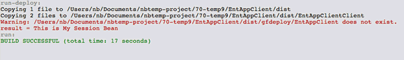

Apache NetBeans
Apache NetBeansJust released!
GlassFish Server上でのアプリケーション・クライアントの作成と実行
| This tutorial needs a review. You can open a JIRA issue, or edit it in GitHub following these contribution guidelines. |
このチュートリアルでは、単純なアプリケーション・クライアントを作成し、GlassFishサーバー3にデプロイされたEnterprise JavaBeans (EJB)にアクセスする方法を示します。このチュートリアルでは、最初に単純なセッションBeanを含むエンタープライズ・アプリケーションと、セッションBean用のリモート・インタフェースを含むJavaクラス・ライブラリ・プロジェクトを作成します。次に、クラス・ライブラリ内のリモート・インタフェースを介してセッションBeanにアクセスするアプリケーション・クライアントを作成します。リモート・インタフェースを含むクラス・ライブラリJARは、エンタープライズ・アプリケーションとアプリケーション・クライアントのクラスパスに追加されます。
チュートリアルの課題

Figure 1. このページの内容は、NetBeans IDE 7.2、7.3、7.4および8.0に適用されます
このチュートリアルに従うには、次のソフトウェアとリソースが必要です。
| ソフトウェアまたはリソース | 必須バージョン |
|---|---|
7.2、7.3、7.4、8.0、Java EEバージョン |
|
バージョン7または8 |
|
GlassFish Server Open Source Edition |
3.x、4.x |
前提条件
このドキュメントは、次のテクノロジについて基本的な知識またはプログラミング経験を持つ読者を想定して書かれています。
-
Javaプログラミング
-
NetBeans IDE
終了したプロジェクトのZIPアーカイブはダウンロードできます。GlassFish 3.0を使用する場合は、NetBeans IDE 6.8プロジェクト用のZIPアーカイブを使用してください。
Javaクラス・ライブラリの作成
この項では、EJB用のリモート・インタフェースを含むJavaクラス・ライブラリ・プロジェクトを作成します。このリモート・インタフェースは、クライアントがEJBとやり取りするために使用するEJB用のAPIとして動作します。
ライブラリJARは、EJBをコールする必要があるクライアントに簡単に配布できます。EJBにアクセスする必要があるクライアントは、プロジェクトのクラスパスにライブラリJARを追加するのみで済みます。EJBの実装では、同じJARを使用してインタフェースを実装します。
-
「ファイル」>「新規プロジェクト」([Ctrl]-[Shift]-[N]、Macの場合は[⌘]-[Shift]-[N])を選択し、「Java」カテゴリの「Javaクラス・ライブラリ」を選択します。「次」をクリックします。
-
「プロジェクト名」に「EJBRemoteInterface」と入力します。「終了」をクリックします。

Figure 2. 新規クラス・ライブラリ・プロジェクト・ウィザード
「終了」をクリックすると、IDEによってJavaクラス・ライブラリ・プロジェクトが作成されます。次の項では、Java EEエンタープライズ・アプリケーションとEJBモジュールを作成します。次に、ウィザードを使用してセッションBeanとクラス・ライブラリ・プロジェクト内のセッションBean用のリモート・インタフェースを作成します。アプリケーション・クライアントはクラス・ライブラリ内のインタフェースを経由してセッションBeanにアクセスします。
EJBモジュールの作成
この項では、エンタープライズ・アプリケーションとEJBモジュールを作成します。EJBを作成するときは、EJBをエンタープライズ・アプリケーションの一部として作成し、EARアーカイブとしてパッケージ化してサーバーにデプロイするようにしてください。
エンタープライズ・アプリケーションの作成
この項では、新規プロジェクト・ウィザードを使用してEJBモジュールを含むエンタープライズ・アプリケーションを作成します。このウィザードには、アプリケーションの作成時にEJBモジュールを作成するオプションが用意されています。
-
「ファイル」>「新規プロジェクト」を選択し、「Java EE」カテゴリの「エンタープライズ・アプリケーション」を選択します。「次」をクリックします。
-
「プロジェクト名」に「EntAppEJB」と入力します。「次」をクリックします。
-
サーバーとして「GlassFish Server」を選択します。
-
「EJBモジュールを作成」が選択され、「Webアプリケーション・モジュールを作成」が選択されていないことを確認します。「終了」をクリックします。 image::images/appclient-newentappejb.png[title="新規エンタープライズ・アプリケーション・ウィザードで「EJBモジュールの作成」が選択されている"]
「終了」をクリックすると、IDEによってエンタープライズ・アプリケーションとEJBモジュールが作成されます。「プロジェクト」ウィンドウで、エンタープライズ・アプリケーション・プロジェクトの「Java EEモジュール」ノードの下にEJBモジュール・プロジェクトが一覧表示されていることがわかります。

Figure 3. 開いているプロジェクトを示す「プロジェクト」ウィンドウ
クラス・ライブラリ、エンタープライズ・アプリケーション、EJBモジュールの3タイプのプロジェクトが一覧表示されていることがわかります。
セッションBeanの作成
この課題では、ウィザードを使用してEJBモジュール・プロジェクト内にセッションBeanを作成します。このウィザードでは、クラス・ライブラリ・プロジェクト内にセッションBean用のリモート・インタフェースも作成します。
-
EJBモジュール・プロジェクトを右クリックし、「新規」>「セッションBean」を選択します。
-
「EJB名」に「MySession」と入力します。
-
「パッケージ」に「ejb」と入力します。
-
「セッションのタイプ」として「ステートレス」を選択します。
-
「インタフェースを作成」で「リモート」オプションを選択します。
-
ドロップダウン・リストから*EJBRemoteInterface*プロジェクトを選択します。「終了」をクリックします。 image::images/appclient-wizard-newsessionbean.png[title="新規セッションBeanウィザード"]
「終了」をクリックすると、IDEによってEJBモジュールの ejb パッケージ内にセッションBeanが作成され、エディタでそのクラスが開きます。 MySession に MySessionRemote インタフェースが実装され、EJBRemoteInterface JARがEJBモジュールのライブラリとして追加されたことがわかります。
このウィザードによって、EJBRemoteInterfaceプロジェクトの ejb パッケージ内に MySessionRemote という名前のリモート・インタフェースも作成されます。EJBインタフェースに必要なJava EE 6 APIライブラリがIDEによって自動的に追加されます。

Figure 4. セッションBeanとリモート・インタフェースを示す「プロジェクト」ウィンドウ
ビジネス・メソッドの追加
この課題では、文字列を返す単純なビジネス・メソッドをセッションBean内に作成します。
-
MySessionのエディタ内を右クリックして「コードを挿入」([Alt]-[Insert]、Macの場合は[Ctrl]-[I])を選択し、「ビジネス・メソッドを追加」を選択します。
-
「メソッド名」に「getResult」と入力し、「戻り型」として「文字列」を選択します。「OK」をクリックします。
-
以下の変更を加えて、文字列を返すように
getResultメソッドを変更します。
クラスは次のようになるはずです。
@Stateless
public class MySession implements MySessionRemote {
public String getResult() {
return *"This is My Session Bean"*;
}
}-
変更を保存します。
これで、リモート・インタフェースを介して公開される単純なEJBを含むエンタープライズ・アプリケーションができました。また、他の開発者に配布できるEJBインタフェースを含む独立したクラス・ライブラリもできました。開発者は、リモート・インタフェースによって公開されるEJBとやり取りする場合にはこのライブラリを自分のプロジェクトに追加でき、EJBのソースを持つ必要はありません。EJBのコードを変更したときは、インタフェースのいずれかを変更した場合に更新されたクラス・ライブラリのJARを配布するのみで済みます。
「ビジネス・メソッドを追加」ダイアログを使用すると、IDEによってリモート・インタフェースにメソッドが自動的に実装されます。
エンタープライズ・アプリケーションのデプロイ
これで、エンタープライズ・アプリケーションをビルドし、実行できるようになりました。アプリケーションを実行すると、IDEによってEARアーカイブがサーバーにデプロイされます。
-
EntAppEJBエンタープライズ・アプリケーションを右クリックし、「デプロイ」を選択します。
「デプロイ」をクリックすると、IDEによってエンタープライズ・アプリケーションがビルドされ、EARアーカイブがサーバーにデプロイされます。「ファイル」ウィンドウを見ると、EJBRemoteInterface JARがアプリケーションとともにデプロイされていることがわかります。
「サービス」ウィンドウで、「GlassFish Server」の「アプリケーション」ノードを展開すると、EntAppEJBがデプロイされたことがわかります。
アプリケーション・クライアントの作成
この項では、エンタープライズ・アプリケーション・クライアントを作成します。アプリケーション・クライアントを作成するときは、EJBを参照するためのライブラリとしてEJBRemoteInterface Javaクラス・ライブラリがプロジェクトに必要です。
エンタープライズ・アプリケーションを実行すると、IDEによってアプリケーション・クライアントとJavaクラス・ライブラリJARがEARアーカイブにパッケージ化されます。アプリケーション・クライアントからJARにアクセスする場合は、ライブラリJARをアプリケーション・クライアントと一緒にEARにパッケージ化する必要があります。
エンタープライズ・アプリケーションの作成
この課題では、新規プロジェクト・ウィザードを使用してアプリケーション・クライアント・プロジェクトを作成します。GlassFish 3.1または4.xへデプロイすると、アプリケーション・クライアントをスタンドアロン・プロジェクトとして作成し、実行できます。アプリケーション・クライアントをエンタープライズ・アプリケーションの一部としてデプロイし、実行する必要はなくなりました。
*注意:*GlassFish 3.0.1にデプロイする場合は、アプリケーション・クライアントをエンタープライズ・アプリケーション・プロジェクト内のモジュールとして作成し、エンタープライズ・アプリケーションを実行する必要があります。
-
「ファイル」>「新規プロジェクト」を選択し、「Java EE」カテゴリの「エンタープライズ・アプリケーション・クライアント」を選択します。「次」をクリックします。
-
「プロジェクト名」に「EntAppClient」と入力します。「次」をクリックします。
-
サーバーとして「GlassFish Server」を選択します。「終了」をクリックします。
プロジェクトをエンタープライズ・アプリケーションに追加する必要はありません。

Figure 5. 「新規プロジェクト」で選択したアプリケーション・クライアントの作成
「終了」をクリックすると、IDEによってアプリケーション・クライアント・プロジェクトが作成され、エディタで Main.java が開きます。
クラス・ライブラリの追加
次に、リモート・インタフェースを含むクラス・ライブラリをプロジェクトのクラスパスに追加して、アプリケーション・クライアントがEJBを参照できるようにする必要があります。クラス・ライブラリ・プロジェクトが開いているので、「エンタープライズBeanをコール」ダイアログを使用してEJBをコールするコードを生成できます。
クラス・ライブラリ・プロジェクトが開いていない場合は、「ライブラリ」ノードを右クリックし、EJBRemoteInterfaceプロジェクトのJARを見つけることにより、「プロジェクト」ウィンドウでプロジェクトにクラス・ライブラリを追加できます。
-
EntAppClientプロジェクトの「ソース・パッケージ」ノードを展開し、エディタで
Main.javaを開きます。 -
ソース・コード内を右クリックして「コードを挿入」([Alt]-[Insert]、Macの場合は[Ctrl]-[I])を選択し、「エンタープライズBeanをコール」を選択して「エンタープライズBeanをコール」ダイアログを開きます。
-
EntAppEJBプロジェクト・ノードを展開してMySessionを選択します。「OK」をクリックします。 image::images/appclient-callenterprise.png[title="「エンタープライズBeanをコール」ダイアログ"]
このダイアログでは、インタフェース・タイプとして「リモート」が自動的に選択されています。「OK」をクリックすると、IDEによって Main.java に以下の注釈が追加されます。
@EJB
private static MySessionRemote mySession;また、IDEによってEJBRemoteInterfaceがプロジェクト・ライブラリとして自動的に追加されます。
-
MySessionRemoteインタフェースを経由して
getResultメソッドの文字列を取得するようにmainメソッドを変更します。変更を保存します。
public static void main(String[] args) {
*System.err.println("result = " + mySession.getResult());*
}アプリケーション・クライアントの実行
これで、EntAppClientプロジェクトをビルドしてデプロイすることにより、アプリケーションを実行できます。
-
「プロジェクト」ウィンドウ内のEntAppClientプロジェクトを右クリックし、「実行」を選択します。
または、ソース・パッケージ展開し、 Main.java クラスを右クリックして「ファイルを実行」を選択することもできます。
「実行」をクリックすると、IDEによってアプリケーション・クライアント・プロジェクトがビルドされ、JARアーカイブがサーバーにデプロイされます。「出力」ウィンドウにアプリケーション・クライアントからのメッセージが表示されます。

Figure 6. 「出力」ウィンドウの結果
追加のEJBを作成する場合は、EJBの新しいリモート・インタフェースをEJBRemoteInterfaceクラス・ライブラリ・プロジェクトに追加するのみで済みます。
次の手順
NetBeans IDEを使用したJava EEアプリケーションの開発方法の詳細は、次のリソースを参照してください。
EJBエンタープライズBeanの使用方法については、Java EE 6チュートリアルを参照してください。
nbj2eeメーリング・リストに登録することによって、NetBeans IDE Java EE開発機能に関するご意見やご提案を送信したり、サポートを受けたり、最新の開発情報を入手したりできます。